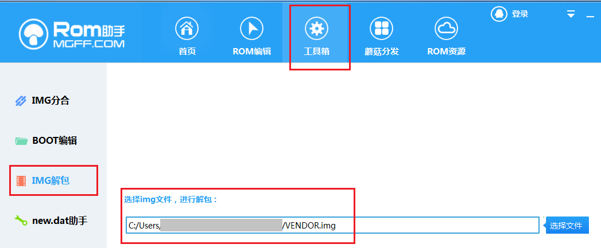

自己动手，制作内置root权限的ramdisk.img(boot.img)
华为和荣耀的新机器一向twrp适配的非常慢，如果要获取root，最简便的办法就是做一个内置root权限的ramdisk.img包。
授人以鱼不如授人以渔，如果你有耐心，希望本文能帮到你。
本文大致讲一下如何制作，毕竟无论国内还是国外，关于这个的内容少之又少，我走了很多弯路才摸索出来，所以分享出来，希望各位如果有心能帮助大家少走一些弯路，省一点精力和时间。
PS：伸手党专用，我已做好的内置supersu的ramdisk.img: http://club.huawei.com/forum.php?mod=viewthread&tid=14888928&page=1&extra=#pid335885190
或者使用magisk root： http://club.huawei.com/forum.php?mod=viewthread&tid=15216460&page=1&extra=#pid341388051
准备工作
- 下载supersu beta版，到xda-developor论坛自行下载，本文编写是的版本为 supersu beta 2.82 sr5。
如何制作
- ramdisk.img 在荣耀V10上测试，失败，变砖！！
- 仍然需要进一步研究。。。。
-
下载 Full-OTA
update.zip，从中提取update.app
从 http://pro-teammt.ru/firmware-database/?firmware_model=&firmware_page=1 ，
搜搜自己的手机型号（可从“关于手机/型号”中查看），
比如 荣耀V10高配版为BKL-AL20。下载大于1G甚至2G的FULL-OTA的update.zip文件。
下载完成后解压，得到update.app文件 update.app中提取出ramdisk.img和vendor.img- 下载 Huawei update extrator
- 启动 Huawei update extrator，解包前，先到设置中，去掉 verify header 1. checksum，否则打不开
- 用Extractor 从 update.app 文件，提取出
ramdisk.img和vendor.img
- 解包ramdisk.img
- 下载 Bootimg.exe ，这个工具用来解包ramdisk.img
- 把ramdisk.img改名为boot.img，并与bootimg.exe放到同一个文件夹
- 在该文件夹启动cmd，输入
bootimg.exe --unpack-bootimg，解包
- 加入 init.supersu.rc
- 编辑initrd文件夹下的init.rc文件，在
import /init.${ro.zygote}.rc下添加一行import init.supersu.rc - 拷贝
SR5-SuperSU-v2.82-SR5-20171001224502\common\init.supersu.rc到 initrd 下
- 编辑initrd文件夹下的init.rc文件，在
-
删除 initrd/verity_key 文件
-
从SuperSU提取打包出
root.tar，并拷贝到 /res/.su 下解压supersu，把supersu的文件按照这个文件树重新组织，并打包成root.tar （注意，是tar，用tar cvf 命令）
1 2 3 4 5 6 7 8 9 10 11 12 13 14 15 16
# 压缩文件 C:\android_bootimg-master\root.tar SuperSU.apk supersu_install supersu_install\bin supersu_install\bin\su supersu_install\bin\daemonsu supersu_install\bin\supolicy supersu_install\bin\supolicy_wrapped supersu_install\bin\sukernel supersu_install\xbin supersu_install\lib supersu_install\lib\libsupol.so supersu_install\etc supersu_install\su.d supersu_install\file_contexts supersu_install\supersu_is_here
root.tar与supersu压缩包中文件的对应关系为：
bin/su 、 bin/daemonsu arm64/su bin/sukernel arm64/sukernel bin/supolicy_wrapped arm64/supolicy bin/supolicy arm64/supolicy lib/libsupol.so arm64/libsupol.so file_contexts common/file_contexts supersu_is_here common/supersu_is_here SuperSU.apk common/Superuser.apk 复制完，别忘了
chmod +x supolicy等等拷贝 root.tar 到 /res/.su 下
-
复制 fbe_bypass.sh，launch_daemonsu.sh，tar 三个文件到/sbin下，
修改launch_daemonsu.sh文件，判断/data/adb/su/bin是否存在，如果不存在则解压root.tar到指定目录。1 2 3 4 5 6 7 8 9 10
# copy boot image backups log_print "copying boot image backups from /cache to /data" cp -f /cache/stock_boot_* /data/. 2>/dev/null if ($SBIN); then ### ### 添加这三句 if [ ! -d "/data/adb/su/bin" ]; then /sbin/tar xvf /res/.su/root.tar -C /data fi ### ###
-
给init打补丁
找一台使用supersu2.6以上版本root过的手机，之后在cmd里输入：
1 2 3 4 5 6 7
adb push init /sdcard/init adb shell su sed -i 's/\/system\/etc\/selinux\/plat_sepolicy.cil/\/system\/etc\/selinux\/plat_sepolicy.xxx/g' /sdcard/init adb pull /sdcard/init init -
给sepolicy打补丁，放到initrd目录下。
-
提取sepolicy文件。
由于EMUI8使用了split sepolicy，所以ramdisk下没有sepolicy文件，
不过你可以从vendor.img中找到他。- 用ROM助手打开vendor.img，
 - 复制 /etc/selinux/precompiled_sepolicy 出来，改名为 sepolicy 。
- 用ROM助手打开vendor.img，
-
给sepolicy打补丁
之后同样，用已使用supersu2.6版本以上root过的手机，继续操作如下：
1 2 3 4 5 6 7 8 9 10 11
adb push sepolicy /sdcard/sepolicy adb shell su supolicy --file /sdcard/sepolicy /sdcard/sepolicy_out --sdk=26 supolicy v2.82 (ndk:arm64-v8a) - Copyright (C) 2014-2017 - Chainfire & CCMT Patching policy [/sdcard/sepolicy] --> [/sdcard/sepolicy_out] ... libsepol.policydb_index_others: security: 1 users, 4 roles, 2182 types, 0 bools libsepol.policydb_index_others: security: 1 sens, 1024 cats libsepol.policydb_index_others: security: 91 classes, 25768 rules, 0 cond rules - Success
注意，注意！！！ 千万不要忘记后面的
--sdk=26 -
将新的sepolicy放到 initrd 目录下。
把sepolicy_out文件复制出来，改名为sepolicy，放到initrd目录下。
-
-
更改 cpiolist.txt 文件，把我们新增的几个文件和文件夹加到里面
compress_level:6 dir . 0755 dir acct 0755 slink bugreports /data/user_de/0/com.android.shell/files/bugreports 0644 dir cache 0770 slink charger /sbin/charger 0644 dir config 0500 slink d /sys/kernel/debug 0644 dir data 0771 slink default.prop system/etc/prop.default 0600 dir dev 0755 dir dload 0755 file dload/update_huawei_dload.zip initrd/dload\update_huawei_dload.zip 0644 slink etc /system/etc 0644 file fstab.zram1024m initrd/fstab.zram1024m 0640 file fstab.zram1280m initrd/fstab.zram1280m 0640 file fstab.zram1536m initrd/fstab.zram1536m 0640 file fstab.zram2240m initrd/fstab.zram2240m 0640 file fstab.zram256m initrd/fstab.zram256m 0640 file fstab.zram512m initrd/fstab.zram512m 0640 file fstab.zram768m initrd/fstab.zram768m 0640 file init initrd/init 0750 file init.environ.rc initrd/init.environ.rc 0750 file init.rc initrd/init.rc 0750 file init.supersu.rc initrd/init.supersu.rc 0750 file init.usb.configfs.rc initrd/init.usb.configfs.rc 0750 file init.usb.rc initrd/init.usb.rc 0750 file init.zygote32.rc initrd/init.zygote32.rc 0750 file init.zygote64_32.rc initrd/init.zygote64_32.rc 0750 dir mnt 0755 dir oem 0755 dir patch 0755 dir patch/cust 0755 dir patch/cust/upper 0755 dir patch/cust/work 0755 dir patch/product 0755 dir patch/product/upper 0755 dir patch/product/work 0755 dir patch/system 0755 dir patch/system/upper 0755 dir patch/system/work 0755 dir patch/vendor 0755 dir patch/vendor/upper 0755 dir patch/vendor/work 0755 dir patch_hw 0755 dir proc 0755 dir res 0755 file res/keys initrd/res\keys 0644 file res/native_packages.xml initrd/res\native_packages.xml 0644 file resetFactory.cfg initrd/resetFactory.cfg 0644 dir res/.su 0750 file res/.su/root.tar initrd/res\.su\root.tar 0750 file rootscan.conf initrd/rootscan.conf 0644 dir sbin 0750 file sbin/adbd initrd/sbin\adbd 0750 file sbin/charger initrd/sbin\charger 0750 file sbin/cota initrd/sbin\cota 0750 file sbin/cust initrd/sbin\cust 0750 file sbin/cust_init initrd/sbin\cust_init 0750 file sbin/factory_reset initrd/sbin\factory_reset 0750 file sbin/fbe_bypass.sh initrd/sbin\fbe_bypass.sh 0700 file sbin/fsck.f2fs_s initrd/sbin\fsck.f2fs_s 0750 file sbin/hdbd initrd/sbin\hdbd 0750 file sbin/huawei_dload initrd/sbin\huawei_dload 0750 file sbin/hw_ueventd initrd/sbin\hw_ueventd 0750 file sbin/kmsgcat initrd/sbin\kmsgcat 0750 file sbin/launch_daemonsu.sh initrd/sbin\launch_daemonsu.sh 0700 file sbin/logctl_service initrd/sbin\logctl_service 0750 file sbin/ntfs-3gd initrd/sbin\ntfs-3gd 0750 file sbin/oeminfo_nvm_server initrd/sbin\oeminfo_nvm_server 0750 file sbin/resize.f2fs_s initrd/sbin\resize.f2fs_s 0750 file sbin/tar initrd/sbin\tar 0750 slink sbin/ueventd ../init 0750 file sbin/volisnotd initrd/sbin\volisnotd 0750 slink sbin/watchdogd ../init 0750 file sbin/xlogcat-early initrd/sbin\xlogcat-early 0750 slink sdcard /storage/self/primary 0644 file sepolicy initrd/sepolicy 0644 dir storage 0751 dir .subackup 0 file .subackup/0000_fstab.zram1024m initrd/.subackup\0000_fstab.zram1024m 0640 file .subackup/0001_fstab.zram1280m initrd/.subackup\0001_fstab.zram1280m 0640 file .subackup/0002_fstab.zram1536m initrd/.subackup\0002_fstab.zram1536m 0640 file .subackup/0003_fstab.zram2240m initrd/.subackup\0003_fstab.zram2240m 0640 file .subackup/0004_fstab.zram256m initrd/.subackup\0004_fstab.zram256m 0640 file .subackup/0005_fstab.zram512m initrd/.subackup\0005_fstab.zram512m 0640 file .subackup/0006_fstab.zram768m initrd/.subackup\0006_fstab.zram768m 0640 file .subackup/0007_init initrd/.subackup\0007_init 0750 file .subackup/0008_init.rc initrd/.subackup\0008_init.rc 0750 file .subackup/0009_verity_key initrd/.subackup\0009_verity_key 0644 file .subackup/index initrd/.subackup\index 0644 dir sys 0755 dir system 0755 file ueventd.rc initrd/ueventd.rc 0644 dir vendor 0755 file verity_key initrd/verity_key 0644 删除这行 file version.prop initrd/version.prop 0644
-
最后，重新打包
输入bootimg.exe --repack-ramdisk，看看有没有报错，
如果没有，再输入bootimg --repack-bootimg，会生成一个boot-new.img文件。 - 你就得到了一个内置root权限的boot.img，使用
fastboot flash ramdisk boot-new.img刷到手机里吧。
题外话，生成 sepolicy 的方法
对于SpilitSepolicy设备，除提取vendor下的precompiled_sepolicy外，还可以自己使用官方文件编译，很简单。
首先找到如下几个文件：
1 2 3 4 | PLAT_CIL="/system/etc/selinux/plat_sepolicy.cil" MAPPING_CIL=$(find /system/etc/selinux | grep mapping | grep -m 1 "\.cil$") NONPLAT_CIL="/vendor/etc/selinux/nonplat_sepolicy.cil" POLICY_VERSION=$(cat /sys/fs/selinux/policyvers) |
其中MAPPING_CIL在荣耀V10上B132版本上，是/system/etc/selinux/mapping/26.0.cil
之后，使用系统中已经内置的secilc编译，编译格式：
1 | secilc "$PLAT_CIL" -M true -c "$POLICY_VERSION" "$MAPPING_CIL" "$NONPLAT_CIL" -o /sdcard/sepolicy -f /dev/null |
如果提示没有权限，你可以先把这些文件都adb pull 出来，之后复制到sdcard上，之后再编译，比如：
1 | secilc "/sdcard/sepolicy/system/etc/selinux/plat_sepolicy.cil" -M true -c "30" "/sdcard/sepolicy/system/etc/selinux/mapping/26.0.cil" "/sdcard/sepolicy/vendor/etc/selinux/nonplat_sepolicy.cil" -o /sdcard/sepolicy/sepolicy -f /dev/null |
这样同样可以得到sepolicy文件，之后再把这个文件用上文所说的方法用supolicy去patch一下，同样可正常使用。
boot.img
- http://www.banxiayue.com/bootimgdownload.html
- boot.img 和 recovery.img 文件结构与知识
- HOWTO: Unpack, Edit, and Re-Pack Boot Images
boot.img在一般情况下包括了ramdisk、kernel, KERNEL_CMDLINE, FLASH_PAGE_SIZE四个部分
ramdisk
ramdisk.img是组成boot.img的重要部分，从Android/build/core/Makefile中可以看到ramdisk.img的生成该过程.
ramdisk.img是用mkbootfs工具从out/target/product/tcc8900/root目录制作得到,
ramdisk映像是一个最基础的小型文件系统，它包括了初始化系统所需要的全部核心文件，例如:初始化init进程以及init.rc（可以用于设置很多系统的参数）等文件。如果你您希望了解更多关于此文件的信息可以参考以下网址：
http://git.source.android.com/?p=kernel/common.git;a=blob;f=Documentation/filesystems/ramfs-rootfs-initramfs.txt
recovery
recovery映像包含了一些额外的文件，例如一个叫做recovery的二进制程序，以及一些对该程序支持性的资源图片文件（当你您按下home+power组合键的时候就会运行这个recovery程序）。
bootimg.exe 使用教程
http://www.banxiayue.com/bootimgdownload.html
bootimg.exe工具命令大全
bootimg –cpio-list
bootimg –repack-565 oemlogo.mbn（生成开机第一屏文件）
bootimg –repack-bootimg boot.img（生成boot.img及recovery.img文件）
bootimg –repack-ramdisk ramdisk（生成ramdisk文件）
bootimg –repack-rle
bootimg –unpack-565 oemlogo.mbn（解开开机第一屏文件）
bootimg –unpack-bootimg boot.img（解开boot.img及recovery.img文件）
bootimg –unpack-ramdisk ramdisk（解开ramdisk文件）
bootimg –unpack-rle
bootimg –unpack-updata UPDATA.APP（解开UPDATA.APP文件）
bootimg –unpack-yafffs system.img（解开system.img及userdata.img文件）
bootimg –unpack-yaffs system.img（解开system.img及userdata.img文件）
bootimg –unpack-yaffs2 system.img（解开system.img及userdata.img文件）